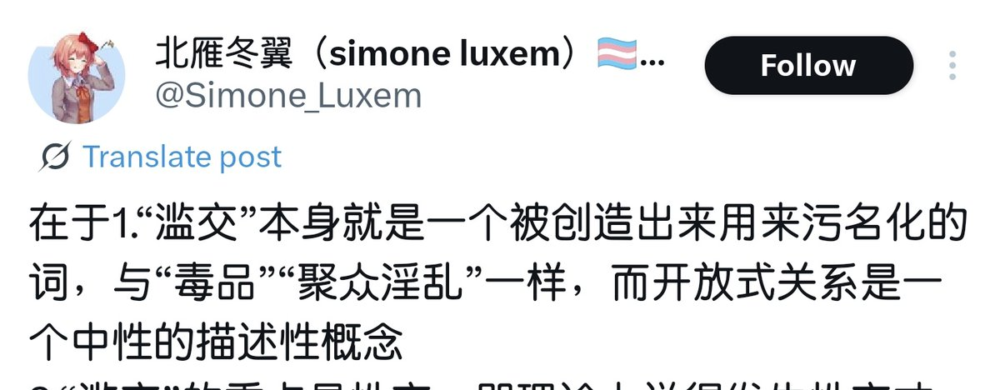

時璃風医詩🍥🌈
@hagishigure
@RT_OnlyWill …你的邏輯思維怎麼回事……
因為是汙名化，把汙名化的東西放到沒有被汙名化的名詞上難道不是汙名化嗎…
這就是用名詞性形容詞形容一個名詞…這個名詞性形容詞可以是中性但是語境認為是偏貶義的那麼這句話就是貶義…
形容詞不會雙重否定等於肯定的…

RT
@RT_OnlyWill
典中典之滥交是污名化，毒品也是污名化
既然都是污名化
那一提mtf就想到滥交和毒品想必不是污名化了 https://t.co/HvVqS3jfgx